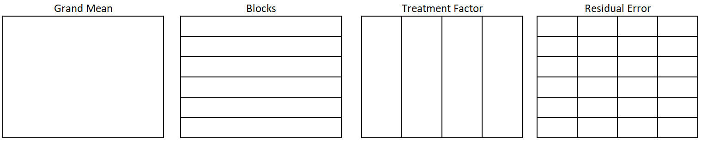

CB[1]
Overview
In a complete block design (CB[1]), there are two controlled factors: a treatment factor and a blocking factor. The study’s objective is usually to measure and/or test the treatment factor effects. The blocking factor is included to avoid confounding the treatment factor with the blocking factor and to reduce the variance of the error term.
In a CB[1] design, there is only one observation per treatment per block, and thus an interaction effect cannot be estimated. In a CB[1], the treatment by block interaction is therefore assumed to be zero.
The toothbrush example can be used to illustrate this design. Imagine the toothbrush researchers are still in the planning stages of the experiment. Researchers want to pre-emptively address the argument that one toothbrush performs better (or worse) simply because the people who use that brush in the study are in some way better at brushing. There are a couple of things the researchers can do. They should of course provide training/education to each participant about the proper way to brush. This would help, but old brushing habits die hard, and skeptics can argue that behavior won’t change.
In addition to adjusting experimental protocols, the design of the experiment can be adjusted to address the concern. Specifically, the researchers can block on participant. The experiment would look like this:
A person uses a particular brush for a set period.
At the end of the period, their plaque amount would be measured and their teeth cleaned
Then they would use a different brush for the same set amount of time.
The process would repeat until the person had used all 4 brushes.
The order of the brush will be randomized for each person to remove any bias due to learning, fatigue, or gradual plaque build up.
Factor Structure
The factor structure for a CB[1] design still has the two universal factors of the grand mean and residual error. There are also two structural factors: blocks and treatments.

In this case, the blocks factor accounts for variation in participants, and the treatment is toothbrush type. There are 6 participants in the study (6 block factor levels). Each toothbrush type appears once in each block. There are 24 observations total, 1 observation for each combination of block and toothbrush.
Hypothesis and Model
Each factor (i.e. meaningful partition of the data) in Figure 1 corresponds to a term on the right hand side of Equation 1:
\[ y_{ij} = \mu + \alpha_i + \beta_j + \epsilon_{ij} \tag{1}\]
Where
\(\alpha\) is the effect of toothbrush, and i goes from 1 to 4 since there are 4 toothbrush types.
\(\beta\) is the effect of participant, and j goes from 1 to 6 since there are 6 participants / blocks.
\(\epsilon\) is the residual error term
Note that since there is only one observation per factor level combination, there is not enough degrees of freedom to estimate an interaction effect.
There are two hypotheses to test with this model. A hypothesis for each structural factor. A hypothesis for the effect of toothbrush type:
\[H_0: \alpha_i = 0 \text{ for all }i\]
\[H_a: \alpha_i \ne 0 \text{ for some }i\]
And a hypothesis for the block factor:
\[H_0: \beta_j = 0 \text{ for all }j\]
\[H_a: \beta_j \ne 0 \text{ for some }j\]
Assumptions
An ANOVA model may be used to analyze data from a CB[1] design if the following requirements are satisfied. Note that these requirements are nearly identical to the requirements of a BF[1] one-way ANOVA.
| Requirements | Method for Checking | What You Hope to See |
|---|---|---|
| Constant variance across factor levels | Residual vs. Fitted Plot | No major disparity in vertical spread of point groupings |
| Normally Distributed Residuals | Normal Q-Q plot | Straight line, majority of points in boundaries |
| Independent residuals | Order plot | No pattern/trend |
| Familiarity with/critical thinking about the experiment | No potential source for bias |